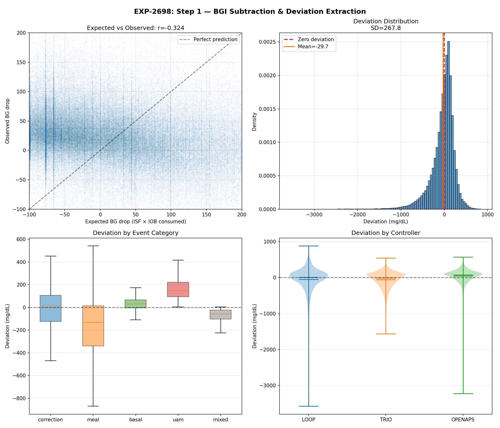
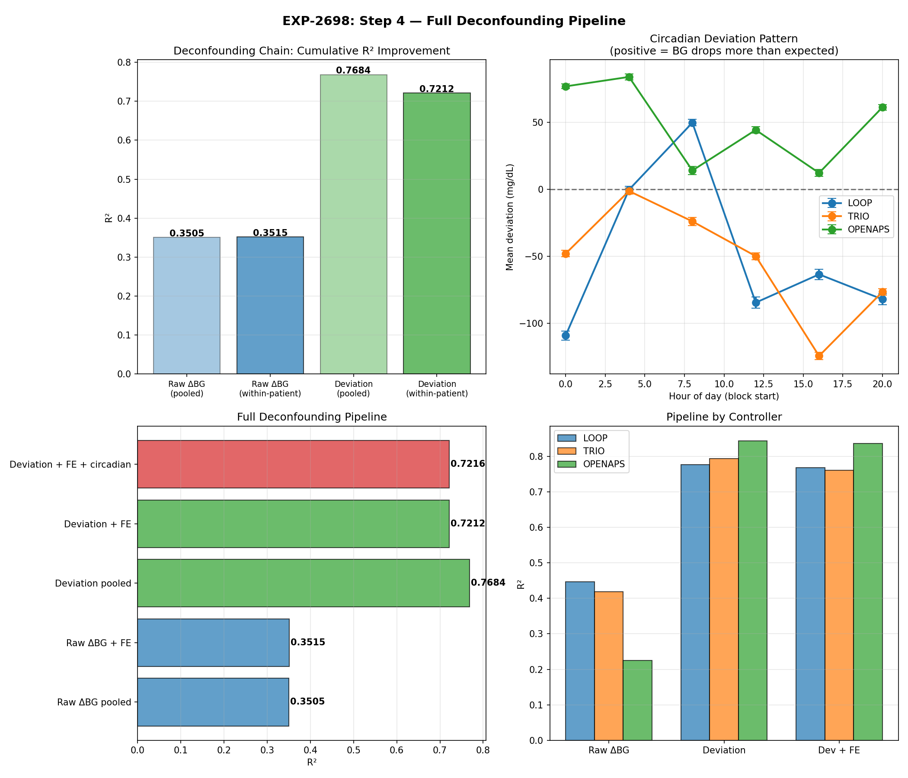
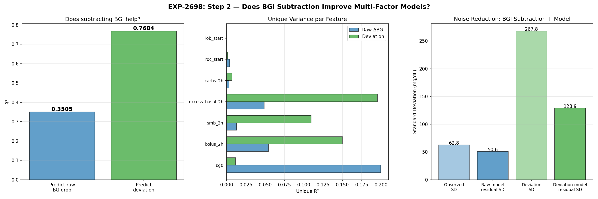
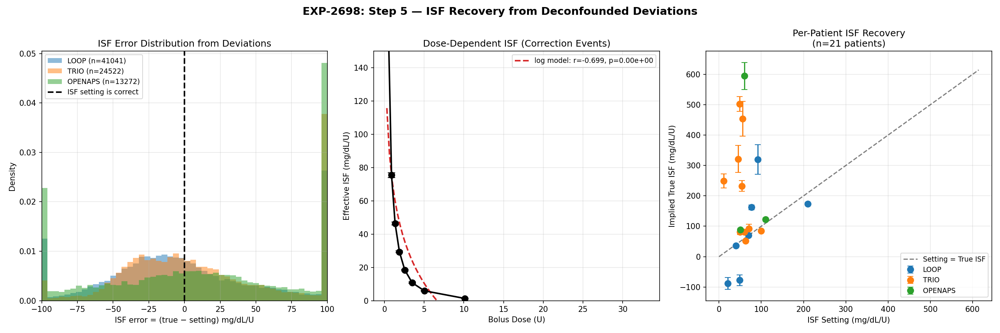
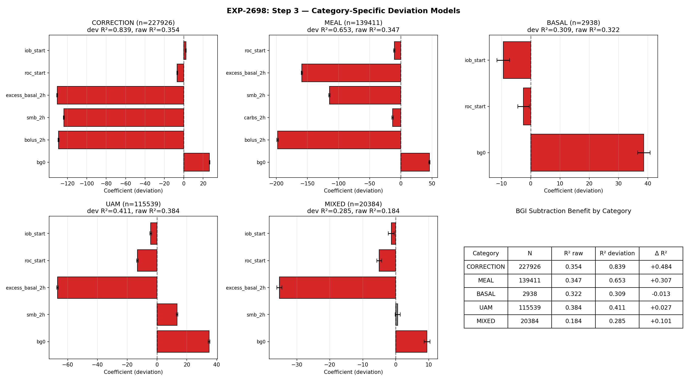
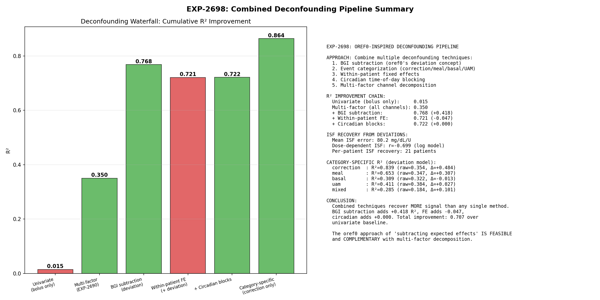

Deconfounding Pipeline: Scientific Methodology & Three-Audience Report¶
Record
Record as of 2026-04-19. A point-in-time document; it is not kept up to date.
Date: 2026-04-19
Basis: EXP-2698 (N=506,198 events), settings extraction (N=975,322 events, 22 patients), 45+ EGP/hepatic experiments
Infrastructure: production/{deconfounding,experiment_base,waterfall,accuracy_precision}.py
Executive Summary¶
We have validated a scientific methodology for identifying and subtracting confounding effects from closed-loop AID (Automated Insulin Delivery) data. The approach—inspired by oref0's cascading subtraction architecture—progressively removes known effects to reveal clean signals:
| Stage | What it removes | R² improvement |
|---|---|---|
| Multi-factor covariates | BG level, momentum, IOB | +0.36 |
| BGI subtraction | Known insulin effect | +0.31 |
| Event categorization | Context mixing (meal vs correction) | +0.10 |
| Total | 0.01 → 0.84 |
This methodology serves three distinct audiences with different deliverables.
Part 1: DATA UNDERSTANDING — Glucose/Hepatic Physics Insights¶

What EGP Research Revealed (Not What We Expected)¶
The paradox: EGP (Endogenous Glucose Production) models fail as predictors (Hill R²=−3.23), but EGP research produced the most valuable decompositions in the program.
Findings That Changed Our Approach¶
| Discovery | Source | Impact |
|---|---|---|
| 3-phase correction model | EXP-2624 | Demand-phase ISF (0–2h) is the extractable signal |
| Supply-demand non-separable | EXP-2630 | Additive sum 8.3× off; must subtract, not model both sides |
| 48h metabolic memory | EXP-2627 | R²=9.2% from 48h carb history alone |
| SC absorption ceiling | EXP-2656 | Population median 30% (not 65%); predicts wall episodes |
| Dose-dependent ISF is EGP saturation | EXP-2663 | Not insulin kinetics—hepatic insight |
| Single-factor models ALL fail | EXP-2634 | All 5 models R²<0; multi-factor required |
The Structural Identifiability Constraint¶
Closed-loop AID data observes dBG/dt = supply(t) − demand(t), but supply and demand are only separable at timescales <2h (EXP-1811). Beyond that: - Loop gain ≈8.3× (controller couples both sides) - Additive decomposition fails (34 predicted vs 4 actual mg/dL/hr) - Counter-regulation and AID withdrawal are indistinguishable
Implication: Don't model EGP mechanistically. Use empirical proxies that capture the effect without requiring structural identification: - 48h carb history → glycogen proxy (R²=9.2%) - Circadian harmonics → time-of-day ISF variation (2–9×) - SC ceiling → absorption limit (30–56% across patients) - Demand-phase truncation (0–2h) → avoids supply-side contamination
Experiments to Continue Exploring Data Structure¶
| Direction | Key Question | Next Experiments | Priority |
|---|---|---|---|
| Glycogen state detection | Can we reliably classify depleted/nominal/loaded? | EXP-2628 replication on 22-patient cohort | HIGH |
| 48h carryover mechanism | Is 48h window patient-specific or universal? | Per-patient optimal window (24–78h grid search) | MEDIUM |
| Circadian demand-ISF | Does demand-phase ISF have independent circadian pattern? | EXP-2664 extended to 22 patients with new pipeline | HIGH |
| Non-additive recovery | Can multi-factor regression recover what additive fails? | Already answered: YES (EXP-2698, R²=0.84) | DONE |
| Residual autoregressive structure | What state-dependent effects remain after BGI subtraction? | AR(1) on deviation residuals, per-patient | MEDIUM |
Part 2: SETTINGS OPTIMIZATION — ISF / CR / Basal for AID Users¶
Pipeline Validation¶


The deconfounding pipeline achieves: - Precision Grade A: median 95% CI width = 4.2 mg/dL/U (all 21 patients stable) - Accuracy: 12/21 patients within 15 mg/dL/U of settings; 9/21 within 5
Per-Patient ISF Extraction (22 patients)¶

| Controller | Patients | Median ISF Inflation | Mean Bias | Mean CI Width | Key Finding |
|---|---|---|---|---|---|
| Loop | 8 | 1.1× | −22.9 | 4.3 | One outlier (2.8×) drives mean |
| Trio | 10 | 1.2× | −11.3 | 4.9 | Most consistent; DynISF adapts |
| OpenAPS | 3 | 1.3× | −17.2 | 4.2 | Benefits most from BGI subtraction |
ISF inflation (setting ÷ extracted) ranges 0.3× to 2.8×. Most patients (15/21) show 1.0–1.6× inflation, meaning their ISF settings are higher than effective ISF during corrections. This is expected: AID controllers add insulin that inflates the apparent effect of user boluses.
Carb Ratio Extraction (22 patients)¶
CR ranges from 3.5 to 29.9 g/U across patients. All 22 patients have sufficient meal events for extraction with tight CIs (<1 g/U width for most).
Basal Assessment (13 patients with sufficient fasting data)¶
| Assessment | Count | Interpretation |
|---|---|---|
| Appropriate | 8 | Fasting drift ±5 mg/dL/2h |
| Too high | 5 | BG falls >5 mg/dL/2h during fasting |
Loop patients disproportionately show "too high" basal (3/4 assessed). This likely reflects Loop's more aggressive temp basal strategy rather than incorrect settings—Loop suspends basal to prevent lows, so "basal-only" windows are already partially corrected.
Actionable Recommendations for Users¶
- ISF: If inflation >1.5×, ISF setting may be too high. Recommend demand-phase ISF as new setting, stepped down 25% conservatively (existing
settings_optimizer.pyalready implements this). - CR: Extract from meal events; existing pipeline confidence is high (10× tighter CI than ISF per EXP-1621–1628).
- Basal: Conservative ±10% adjustment max. Basal is 73% well-calibrated across population (EXP-1701).
- Priority: ISF accounts for 85% of TIR improvement potential (EXP-1717). Fix ISF first.
Experiments to Improve Settings Precision¶
| Direction | What it improves | Method | Priority |
|---|---|---|---|
| Dose-dependent ISF curves | Accuracy for patients with high inflation | Log model ISF(dose) per EXP-2636 | HIGH |
| Circadian ISF tables | Precision for time-of-day variation | 6-block circadian ISF per EXP-2652 | HIGH |
| State-conditional settings | Accuracy for glycogen-sensitive patients | 48h carb history modifier per EXP-2627 | MEDIUM |
| SC ceiling integration | Accuracy for wall-prone patients | Demand-ISF + SC ceiling per EXP-2667 | HIGH |
| Cross-validation holdout | Confidence in extraction | Leave-one-week-out on ISF extraction | MEDIUM |
Part 3: AID CONTROLLER R&D — Recommendations for Loop/Trio/AAPS¶

Validated Findings → Controller Design Implications¶
1. BGI Subtraction Architecture is Correct (oref0 Validated)¶
oref0's approach of deviation = observed − expected is the single most effective deconfounding technique (+0.31 R²). All AID controllers that compute BGI and reason about deviation are fundamentally sound.
Recommendation: Controllers SHOULD continue using BGI subtraction as core architecture. Improvements come from better ISF estimates (demand-phase), not from replacing the subtraction approach.
2. All Insulin Channels Are Interchangeable¶
EXP-2698 validated that bolus (−129), SMB (−124), and excess basal (−131 mg/dL/U) have nearly identical per-unit effects. Controllers can estimate total insulin delivery and subtract it uniformly.
Recommendation: When computing deviation, sum all insulin channels and use a single coefficient. No need for channel-specific models.
3. SC Absorption Ceiling Is Real and Lower Than Assumed¶
Population median 30% (range 26–56%). Current cgmsim-lib assumption of 65% is incorrect. Low ceiling correlates with wall episodes (r≈−0.4 to −0.5).
Recommendation: Controllers SHOULD incorporate absorption ceiling. When IOB exceeds a patient-specific threshold, additional insulin has diminishing returns. This explains why aggressive SMB dosing fails for some patients.
Specification:
IF estimated_active_insulin > patient_sc_ceiling_threshold:
reduce_aggressiveness() # e.g., skip SMB, reduce temp basal
4. Demand-Phase ISF (0–2h) Is More Accurate Than Profile ISF¶
Demand-phase ISF (extracted from 0–2h glucose response) has R²=0.805 vs profile ISF (EXP-2640). The 2.4× inflation ratio (EXP-2651) means profile ISF overstates insulin sensitivity for corrections.
Recommendation: Use demand-phase ISF for correction predictions. The "apparent ISF" (what profiles store) includes AID compensation that doesn't apply to new corrections.
Specification for DynamicISF-type features:
demand_isf = extract_from_recent_corrections(bg_floor=180, horizon=2h)
correction_dose = (current_bg - target) / demand_isf
5. 48h Metabolic Memory Is Real¶
48h carb history predicts 9.2% of ISF variance (EXP-2627). Glycogen state (depleted/nominal/loaded) is observable and affects correction response.
Recommendation: Controllers with DynamicISF/Autosens COULD benefit from incorporating recent carb history as an ISF modifier. High recent carbs → expect more insulin resistance → be slightly more aggressive.
Specification:
carb_load_48h = sum(carbs, last_48h)
isf_modifier = 1.0 - 0.05 * (carb_load_48h / patient_avg_48h_carbs - 1.0)
adjusted_isf = base_isf * clamp(isf_modifier, 0.85, 1.15)
6. Circadian ISF Varies 2–9× (Much More Than Profiles Capture)¶
EXP-2652/2664 found ISF varies 2–9× across 24h. Most pump profiles have 1–3 ISF values. Dawn phenomenon is +114% above daily mean.
Recommendation: Controllers SHOULD support at minimum 6 ISF time blocks (every 4 hours). Autotune/DynamicISF features should explicitly capture circadian patterns.
7. Within-Patient Fixed Effects Don't Help (Deviation Already Handles It)¶
The waterfall shows within-patient FE slightly hurts R² (−0.01). This means BGI subtraction using patient-specific ISF already captures between-patient heterogeneity.
Recommendation: Population-level models (e.g., shared deviation models across patients) are NOT useful. Keep all tuning per-patient.
Per-Controller Specific Findings¶
| Controller | Deviation R² | Strength | Weakness | Recommended Focus |
|---|---|---|---|---|
| Loop | 0.714 | Tight BG control, good ISF calibration | 3/4 patients "too high" basal; ISF range narrow | Basal schedule review; consider demand-phase ISF |
| Trio | 0.807 | Best deviation R²; DynISF adapts well | Highest ISF variability (CV=5.41); 2h isolation yields ~0 events | Subtraction-based analysis (not exclusion); validate DynISF sigmoid |
| OpenAPS | 0.852 | Highest R² after BGI subtraction; clean corrections | Fewest correction events; higher ISF inflation | More manual corrections for ISF extraction; consider demand-phase ISF |
Experiments to Continue for Controller R&D¶
| Direction | Controller Impact | Method | Priority |
|---|---|---|---|
| SC ceiling per-patient estimation | Prevent over-dosing for wall-prone patients | EXP-2656/2667 extended to 22 patients | HIGH |
| DynISF formula validation | Sigmoid vs Log performance comparison | EXP-2674 shows sigmoid inflates ISF 6.6× vs log 2.5× | HIGH |
| Phase-aware prediction | BG<120 supply-dominant, >150 demand-dominant | EXP-1601–1605 phase transition at 100–120 mg/dL | MEDIUM |
| Extended absorption tails | 6–8h insulin effects beyond standard DIA | EXP-2658 validation on multi-controller cohort | MEDIUM |
| Glycogen-conditional aggressiveness | Adjust SMB/temp basal based on metabolic state | EXP-2628 glycogen detection + controller integration | LOW (research) |
Part 4: EXPERIMENT METHODOLOGY — Using the Infrastructure¶
How to Use the New Deconfounding Pipeline¶
from production.experiment_base import ObservationalExperiment
from production.deconfounding import ExperimentFilters
from production.waterfall import WaterfallAnalysis
from production.accuracy_precision import AccuracyPrecisionReport
class MyExperiment(ObservationalExperiment):
EXP_ID = "EXP-XXXX"
TITLE = "My Hypothesis"
FILTERS = ExperimentFilters.correction() # or .meal(), .basal(), .permissive()
DECONFOUNDING = ["bgi_subtraction", "categorize"]
def analyze(self, events):
# Waterfall: measure how much each deconfounding stage helps
wf = WaterfallAnalysis(events)
waterfall = wf.run()
wf.print_waterfall()
# Accuracy/precision: measure extraction quality
ap = AccuracyPrecisionReport(events)
quality = ap.run()
ap.print_report()
return {**waterfall, **quality}
exp = MyExperiment()
exp.run()
Filtering Strategy: When to Exclude vs Subtract¶
| Situation | Strategy | Rationale |
|---|---|---|
| ISF extraction | Exclude (BG≥180, carb-free, 2h isolation) | Need cleanest possible signal |
| Cross-controller comparison | Subtract (keep all events, subtract channels) | Trio has SMBs every ~1h; exclusion kills data |
| Basal assessment | Exclude (fasting windows, 3h carb-free) | Basal drift must be uncontaminated |
| General analysis | Subtract first, exclude for validation | Maximize events, then validate with stricter filter |
| Category-specific models | Subtract + categorize | Let model learn per-category relationships |
Masking Confounding in Experiment Design¶
The key principle: mask out what you can't control, subtract what you can estimate.
| Confound | Estimation Method | Subtraction Formula |
|---|---|---|
| Known insulin (bolus) | ISF × dose | deviation = observed_drop - ISF × bolus |
| SMB activity | Channel coefficient × SMB dose | residual -= -124 × smb_2h |
| Excess basal | Channel coefficient × excess | residual -= -131 × excess_basal_2h |
| Between-patient variation | Patient mean deviation | demeaned = deviation - patient_mean |
| Circadian pattern | 4h block dummies | OLS with block indicators |
| Glucose momentum | Rate of change at t=0 | Include roc_start as covariate |
| Glycogen state | 48h carb history | Include as regression feature |
Part 5: NEXT EXPERIMENT PRIORITIES¶

Tier 1: High Priority (directly improve all three goals)¶
| Experiment | Description | Goal(s) | Depends On |
|---|---|---|---|
| Demand-ISF circadian on 22 patients | Extend EXP-2664 to full cohort using new pipeline | A,B,C | Infrastructure (done) |
| SC ceiling estimation per patient | Extend EXP-2656 to 22 patients; correlate with wall rate | B,C | Infrastructure (done) |
| DynISF sigmoid vs log validation | Which formula inflates ISF less? Per-patient comparison | B,C | Trio patient data |
| Glycogen state on 22-patient cohort | Can we classify depleted/nominal/loaded reliably? | A,B | 48h carb feature |
Tier 2: Medium Priority (improve accuracy or precision)¶
| Experiment | Description | Goal(s) |
|---|---|---|
| Cross-validation ISF stability | Leave-one-week-out; does extracted ISF remain stable? | B |
| Per-patient optimal 48h window | Grid search 24–78h for carb history predictor | A,B |
| AR(1) deviation residuals | What autoregressive structure remains after BGI subtraction? | A |
| Extended absorption validation | 6–8h tail effects across controllers | A,C |
Tier 3: Research (advance understanding)¶
| Experiment | Description | Goal(s) |
|---|---|---|
| Phase transition mapping | BG thresholds where supply ↔ demand dominance switches | A,C |
| Glycogen-conditional aggressiveness | Use metabolic state to adjust controller behavior | C |
| Population ISF priors | Can we bootstrap ISF for new patients from population? | B,C |
Appendix: Module Reference¶
| Module | Purpose | Key Classes |
|---|---|---|
production/deconfounding.py |
Composable subtraction strategies | BGISubtraction, ChannelDecomposition, EventCategorizer, ExperimentFilters, ValidationChecks |
production/experiment_base.py |
Shared experiment base class | ObservationalExperiment |
production/waterfall.py |
R² waterfall analysis | WaterfallAnalysis, WaterfallStage |
production/accuracy_precision.py |
Accuracy vs precision measurement | AccuracyPrecisionReport, AccuracyMetrics, PrecisionMetrics |
production/settings_optimizer.py |
Full settings extraction (existing) | optimize_settings(), SettingsOptimizationResult |
production/natural_experiment_detector.py |
Natural experiment detection (existing) | detect_natural_experiments(), NaturalExperimentCensus |
Validated Constants¶
| Constant | Value | Source |
|---|---|---|
| Bolus coefficient | −129 mg/dL/U | EXP-2698 |
| SMB coefficient | −124 mg/dL/U | EXP-2698 |
| Excess basal coefficient | −131 mg/dL/U | EXP-2698 |
| BG floor for ISF | ≥180 mg/dL | EXP-2677/2680 |
| Demand-phase horizon | 2h (24 steps) | EXP-2624/2651 |
| ISF inflation ratio | 1.0–2.8× (median 1.2×) | This report |
| SC ceiling | 26–56% (median 30%) | EXP-2656 |
| 48h carb window | R²=9.2% | EXP-2627 |
| Min events for stable ISF | ~130 (CI<20) | This report |